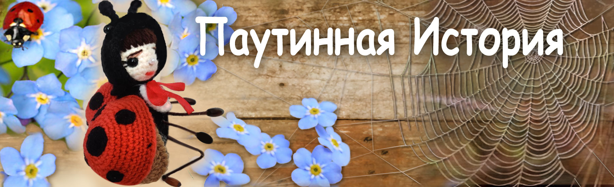

Сказки кота Филомура
бережно записанные его давним поклонником — крысом Мышелем

🕸️ Паутинная история 🕸️
(🐞 Сказка о Верочке и пауке Борисе 🕷️)
Глава 1 | Глава 2 | Глава 3 | Глава 4 | Глава 5 | Глава 6 | Глава 7 | Глава 8
Глава 1. Необычное знакомство
В тот день солнце играло бликами в пыли. Лёгкий ветерок пробирался сквозь щели старого сарая и приносил с собой запах сухого сена и прохладной тени. Божья коровка Верочка не собиралась залетать внутрь — ей просто хотелось на минутку укрыться от жары. Сарай казался ей тихим и пустым, почти волшебным. Сквозь щёлочки просачивались лучи света — будто золотые нити, натянутые в воздухе. Но стоило ей пролететь чуть дальше, как всё изменилось. Что-то прилипло к её ножке. Потом — к крылышку.
Она отчаянно взмахнула крылышками, пытаясь освободиться, — и попала прямо в тонкую, невидимую ловушку. Паутинка пружинила и тянулась, цеплялась за крылья, за лапки. Верочка испугалась. Чем больше она пыталась выбраться, тем сильнее путалась в клейких нитях.
— Ах… что это?.. Помогите… — прошептала она еле слышно. Из глубокой щели в стене послышалось негромкое, тяжёлое кряхтение. Сначала — тихое, потом всё громче. Раздался шорох: кто-то пробирался сквозь пыль и тьму. — Ага! Попалась… — проговорил ворчливый голос.
— Кто это мне тут паутину всю изорвал? Показалась большая лапа, затем — глаз в тени. Паук Борис медленно вылез на свет, ожидая увидеть сочную муху на обед. Но вместо этого он увидел крошечную дрожащую фигурку в чёрных крапинках на алых крылышках.
— Простите… господин Паук… — пропищала Верочка, сжавшись в комочек. — Я… я не хотела… Я случайно…
На крыше, между дощечек, как всегда без дела сидела пчела Жужа. Она услышала испуганный голос и заглянула внутрь. Её бестолковое воображение тут же дорисовало ужасную картину.
— Караул!! Спасите!!! — закричала она так громко, что спугнула воробья с яблони. — Борис ест Верочку! Он хочет её съесть! На помощь, кто-нибудь!!! Караул!!! И, закружившись, завизжав и затараторив, понеслась прочь, не дожидаясь ответа. Она и не знала, что пауки не едят божьих коровок. Подробности её не интересовали — главное, началось что-то стоящее внимания. А где события, там и Жужа. А в сарае было всё ещё тихо. Верочка перестала шевелиться. Она притихла и ждала своей участи, не зная, что скажет этот страшный, огромный, старый паук. А Борис, щурясь от света, вдруг почувствовал: эта встреча — не совсем обычная.
Глава 2. Арчибальд и Максим
В жаркий полдень, когда даже стрекозы летали лениво, будто нехотя, а навозная куча источала густой философский аромат, кролик Максим кипел от энергии. Он бегал туда-сюда, размахивал лапками и раздавал агитационные листовки всем, кого встречал — жучкам, птенцам, даже равнодушному кроту, выглянувшему на минутку из норы.— Права червей — это права каждого из нас! — повторял он, как заклинание. — Кто, если не мы? Где, если не здесь? Когда, если не сейчас?!
Но день выдался знойный, и сами черви, ради которых он и собрался бороться, давно зарылись глубоко в прохладный навоз. Им было уютно и спокойно, и никаких прав они не требовали. Они были вполне довольны жизнью и на все лозунги, мегафоны и плакаты отвечали только безмолвием. А вот Максиму страсть как хотелось массовости, публичности и громкого эффекта. Ему нужна была аудитория, восхищённые взгляды и фото на обложке журнала «Живая Земля».
И вдруг… кролик заметил его — представительного, важного. Именно то, что надо! По залитой солнцем тропке вальяжно вышагивал жук Арчибальд. Майский — как май бывает в мечтах: во фраке, с цилиндром и тонкой шпагой в ножнах, инкрустированных золотыми чешуйками. Его усики были идеально начёсаны, а панцирь отливал свежим лаком. Он шёл неторопливо, с видом того, кто вышел не гулять, а быть замеченным. Максим быстро отряхнул пыль с жилетки, пригладил уши и бросился к нему, стараясь изобразить уверенность и благородство.
— Приветствую вас, товарищ Арчибальд! Жук приподнял бровь — одной своей чешуйчатой дугой.
— Свинья лебедю не товарищ, — с холодной вежливостью проговорил он и отвернулся, словно воздух стал менее достойным. Максим на мгновение опешил, но отступать не собирался.
— Совершенно согласен, — ловко отвёл он реплику в сторону. — Тогда… гражданин Арчибальд! Мы проводим важнейшее общественное мероприятие! Пикет за права червей-гермафродитов! Вас ждёт возможность проявить свою яркую гражданскую позицию! И, не дожидаясь ответа, он тут же вытащил рупор (сделанный из обёртки от мятной карамельки) и заорал так, что проснулись гусеницы: — СВОБОДУ И РАВНОПРАВИЕ ЧЕРВЯМ-ГЕРМАФРОДИТАМ!!! Арчибальд вздрогнул. Его усы задрожали.
— Что?! — прошипел он, поворачиваясь. — Ты… ты намекаешь, что я… червь?! Ты в своём ли уме, ушастый подстрекатель? Это публичное оскорбление! Публичное, понимаешь?! Да как ты смеешь мою жучью честь связывать с… с какими-то слизняками из навоза! Он развернулся стремительно, усы взметнулись, лапка легла на эфес шпаги. Панцирь буквально искрил от ярости.
— Сейчас ты у меня попляшешь, ушастый агитатор! И вот-вот бы случилось нечто ужасное — наглядный урок о соотношении слов и последствий, — если бы не Жужа.
Как всегда, вовремя и невпопад, она с жужжанием пронеслась над их головами и закричала:
— Спасите! Помогите! Борис собирается съесть Верочку!
Глава 3. «Спасение» Верочки
— На помощь! Спасите нашу Верочку от ужасной участи! Где же вы, герои?! — завопила Жужа, облетая двор тревожным зигзагом, как сирена на крыльях. Поначалу никто не отозвался. Птицы прятались в кустах, мыши — в норах. Даже селезень сделал вид, что он вообще не при делах. Арчибальд и Максим одновременно задрали головы и переглянулись.
— Какая ещё Верочка? — недовольно спросил Арчибальд.
— И кто такой паук Борис? — переспросил Максим, уже чуя громкое дело.
— Да в сарае! — тараторила Жужа. — Там ужас! Там трагедия! Там… там он её ест! Арчибальд на секунду задумался. Ах, эта божья коровка… Она его никогда не привлекала: слишком скромная, слишком тихая. Ни тебе флирта, ни интриги, ни яркого макияжа на крылышках. Не его стиль. Но он заметил взгляды, устремлённые на него. «Если я сейчас не вмешаюсь, — подумал он, — они решат, что я бесчувственен. Или, ещё хуже, что я трус. А этого я себе позволить не могу!» И, забыв о размолвке, пикете, листовках и манифестах, оба — каждый по своей причине — поспешили за Жужей.
Несколько листовок осталось валяться в пыли рядом с надкусанной сливой и плакатом: «Все черви равны, но некоторые — равнее». У входа в сарай Арчибальд взмахнул шпагой и произнёс громогласно, не разобравшись в деталях:
— Ты — бездушный злодей, Борис! Как посмел ты пленить юную даму?!
Из тени раздался спокойный голос:
— Милостивый господин, я — простой паук и никого не пленял. Всё, что попадает в мою паутину, по законам природы становится моим обедом. Разве вы сами не наслаждались плодами госпожи Яблоньки, которая год за годом дарит миру сладкие яблоки?
Арчибальд был ошарашен. «Наглец философствует», — подумал он, не найдя ответа.
Борис продолжал:
— Но если вы настаиваете, чтобы я отпустил мою добычу… быть может, вы предложите себя взамен?
Арчибальду такой поворот событий совсем не понравился. Он замешкался, пытаясь придумать достойный ответ.
Вдруг Верочка, наблюдавшая сцену из паутины, в ужасе воскликнула:
— Нет! Нет! Умоляю вас, господин Паук, не троньте его! Это я виновата. Вы остались без обеда по моей вине. Съешьте меня — если иначе нельзя! Арчибальд тут же воспрял духом и, обернувшись к Борису с театральной гордостью, заявил:
— Вы слышите! Если дама просит — джентльмен не вправе отказать. Я требую исполнить её волю! Иначе… я вызываю вас на дуэль!
иначе нельзя! Арчибальд тут же воспрял духом и, обернувшись к Борису с театральной гордостью, заявил:
Максим, хотя и не до конца понял, что происходит, почувствовал: ситуация политически деликатная. Он постучал по рупору и заявил:
— Права женщин — наше всё! Если мадемуазель изъявила волю быть съеденной — это её выбор! Никто не имеет права это осуждать!
— А если вы её не съедите, гражданин Борис, газеты напишут о дискриминации! Прямо на первой полосе: «Паук игнорирует меньшинства!» Борис вздохнул. Он быстро понял, что спорить бесполезно, а разговор утомляет сильнее голода.
— Милостивые господа, будьте уверены: я проявлю уважение к чувствам юной дамы. Уверяю вас, её желания будут услышаны и… учтены. А теперь, если позволите, прошу вас покинуть мой дом. Арчибальд гордо вздёрнул подбородок, будто только что спас целую нацию, пригладил усики, стряхнул с фрака пылинку и приподнял цилиндр, принимая на себя взгляды воображаемой толпы. Затем важно и неторопливо удалился. А за ним вприпрыжку последовал Максим, уже сочиняя в голове сразу две статьи: «Современный взгляд на концепцию свободы выбора» и «Пауки и их патриархальная сеть: вызовы времени».
Глава 4. Верочка и паук Борис
Кто же всё-таки поймался? В головке Верочки звенели мысли, как пчёлы в банке. Но из тени раздался голос — неожиданно спокойный, даже вежливый:
— Мадемуазель, прошу вас, успокойтесь, — сказал паук Борис, подходя ближе. — Я не собираюсь причинить вам никакого вреда. К тому же… божьи коровки нам, паукам, противопоказаны. Пищевая несовместимость. Борис осторожно помог Верочке освободиться от паутины. Убирая обрывки нитей, он едва заметно, будто нечаянно, коснулся её крылышек — и сам удивился, насколько они были тонкие и милые. Вся дрожащая, в мятом платьице, припорошенная мельчайшими пылинками, Верочка стояла посреди сарая, едва дыша. Всё случившееся казалось сном — странным, запутанным, тревожным. Борис мягко уселся на пыльную балку и подтянул к себе лапки.
— Спасибо вам, господин Паук, — прошептала Верочка. — Я так сожалею, что повредила вашу паутину. Простите, пожалуйста.
— Пустяки, моя дорогая посетительница. Паутина — дело наживное, а беседа с прекрасной леди случается куда реже.
Он чуть поклонился.
— Меня зовут Борис.
— Очень приятно… господин Борис. А по отчеству? — спросила она, не желая быть слишком фамильярной.
— Для вас… просто Борис, — неожиданно даже для себя сказал он и чуть смутился.
— Позвольте пригласить вас на чашечку чая. С пирожными… из свежайших, отборных тлей. Исключительный сорт, собирал лично.
— Благодарю вас, господин Борис… но мне, правда, пора идти. Я и так сильно задержалась. Борис кивнул, но взгляд его неотрывно следил за её глазами. В них было что-то хрупкое — как у тех, кто умеет замечать тонкие вещи: солнечный луч на лепестке, шелест травы, тёплый запах дождя.
Что-то странное шевельнулось в его старом, сухом паучьем сердце.
— Позвольте поинтересоваться… что заставило вас возразить моей, скажем так, логичной идее обмена? — спросил он вдруг.
— Ах… не спрашивайте, — взволнованно ответила она, опуская глаза.
— Но вы были готовы пожертвовать собой ради него? Франт Арчибальд, как мне показалось, не слишком того заслуживал.
— Я запрещаю вам, господин, так говорить о моём друге! — вспыхнула Верочка. — Господин Арчибальд… он… он достойный… он прекрасный… он представительный…
Она осеклась. И поняла, что говорит не то, о чём следует говорить молодой девушке.
— Простите. Мне… мне нужно идти.
— Разумеется, мадемуазель. Я не имел намерения вас смущать.
— Прощайте, — торопливо сказала она. — Я… я сама.Верочка скользнула к щели и исчезла, словно светлая искорка в сумерках. Борис остался один. Он молча смотрел в темноту, где только что была она.
— Какая удивительная и милая девушка… — прошептал он. — Ах, да что ж это я… старый занудный паук. Куда мне заглядываться на таких прелестных созданий, как она…Он пополз обратно в щель и долго сидел, не двигаясь. Ни паутины, ни обеда, ни мыслей о делах. Только кроткий голос Верочки — и её дрожащие реснички стояли перед его глазами. Он не мог уснуть. В его сердце ожило странное, давно забытое чувство — не похожее ни на голод, ни на страх. Оно было сладким, как первый дождь после долгой засухи.
Глава 5. Поиски Верочки
Прошло несколько дней. Паук Борис стал необыкновенно задумчив. Он забросил паутину, не проверял ловушки, не восстанавливал оборванные нити. Его мысли были заняты другим. Он думал о Верочке.
Теперь он знал точно: в ловушку попался он сам. Не в липкие нити — в тончайшую паутину чувств. Ту, что невозможно заметить глазом, но невозможно разорвать. Он сам не понял, как оказался у выхода из своей щели, выполз наружу на яркий дневной свет и стал искать… Искать два крошечных крыла — тёпло-оранжевых, с аккуратными чёрными крапинками. Но крылышек нигде не было. Зато тут как тут оказалась Жужа. Увидев Бориса, она подпорхнула поближе, устроилась на коряге и стала наблюдать, изредка жужжа от нетерпения.
— Ну и зачем было устраивать столько шума без причины? — проворчал Борис, но уже без прежней строгости.
Он хотел было скрыться обратно в тень, но вдруг сам не понял, как произнёс:
— Послушай, Жужа… а ты случайно не знаешь, где живёт Верочка?
Он тут же смутился. Слишком откровенно. Он не собирался раскрывать себя. И чтобы сгладить ситуацию, соврал — впервые за долгое время.
— Она у меня тут… забыла кружевной зонтик. Я хотел бы вернуть. Понимаешь.
— Зонтик? — оживилась Жужа. — Ах, понимаю… как мило! Конечно, знаю, где она живёт!
— Вон там, у кустов малины, рядом со старым дубом. Возле мухомора Тимофея. Не заблудишься.
Глаза Жужи сияли: в голове уже складывалась громкая история, которую она с радостью разнесёт по всей округе.
А Борису было всё равно. Его не волновали сплетни — даже о нём самом. Он просто пошёл. Тихо, но решительно. Он должен был увидеть её. К вечеру он был на месте. И — о чудо — она действительно была там. Верочка сидела на листике и задумчиво глядела вдаль. В лучах заходящего солнца её крылышки мягко мерцали, как янтарные лепестки. Она казалась особенно лёгкой, почти прозрачной — словно сотканной из света. Борис подошёл ближе. Осторожно, чтобы не спугнуть. Поднял лапку и вежливо поклонился.
— Добрый вечер, сударыня… Верочка вздрогнула и обернулась. Она была удивлена. И… не особенно рада. Борис ей не нравился — ни его щетинистые лапы, ни старомодный тон, ни эта внезапная неловкая заботливость. Но она была воспитанной девушкой и потому ответила:
— Добрый вечер, господин Паук. Рада вас видеть. Как поживаете?
Она попыталась улыбнуться, но внутри было только одно желание — поскорее ускользнуть. Борис это заметил. Ему стало больно и неловко. Он не хотел быть навязчивым.
— Я просто… вышел на прогулку… навестить старого приятеля, — тихо сказал он, понимая, что снова солгал.
— Не смею вас задерживать. Всего вам доброго, мадемуазель.
Он учтиво поклонился и медленно развернулся, чтобы уйти. Верочка смотрела ему вслед. Что-то странное шевельнулось у неё внутри — лёгкая неловкость. Или жалость. Или, может быть, это просто ветерок подул.
Top of the pageГлава 6. Подвиг Бориса
Солнце клонилось к закату, и воздух над поляной затих, напоённый вечерним светом. Борис бросил прощальный взгляд на Верочку. Смущённый, обескураженный, печальный, он понимал, как нелепо и жалко сейчас выглядит. Ох, как много он хотел бы ей сказать, но… Вдруг он заметил, как полевой воробей меткой стрелой стремительно пикирует вниз — прямо на Верочку.
— Берегитесь! — выкрикнул Борис, и его голос, обычно сухой и ироничный, прозвучал неожиданно остро, почти отчаянно.
Верочка обернулась — но было поздно.
Паук метнулся вперёд. В одно мгновение, собрав все силы, он прыгнул — не думая, не колеблясь — и закрыл собой крохотное, трепещущее тельце божьей коровки.
В следующее мгновение он оказался в клюве воробья. Тот, не заметив подмены, с довольным чириканьем взмыл в небо. Всё произошло так быстро, что Борис даже не успел испугаться. Острая, обжигающая боль пронзила его маленькое тело. Мир помутился.
А потом — тишина. Он больше не летел и не падал. Он будто плыл очень медленно сквозь прозрачную световую ткань — мягкую и лёгкую, как весенний туман. Больше не было ни боли, ни страха, ни печали. Он никогда не любил свет — но этот был особенный. Не слепящий и не жёсткий, а тёплый и тихий, как голос старого друга. Впервые за много лет он не чувствовал ни тяжести, ни ворчливости, ни одиночества. Только покой. Он взглянул вниз и увидел всё, что знал и любил: сарай, щель под крышей, затянутую сложной изящной паутиной; старый дуб, пруд, залитую закатным светом поляну; птичий двор — вечно полный гама, жужжания, кукареканья и беспорядочного движения жизни. Борис понимал: он больше не вернётся туда.
И всё же ему не было грустно. Он даже улыбнулся про себя: жизнь прошла — да. Но не напрасно. Он не знал точно, что это было — мудрость, красота, любовь или самопожертвование. Наверное, всё вместе. Или просто одно важное мгновение, которое переплавило всю жизнь в свет. А внизу, на поляне, Верочка стояла, не в силах пошевелиться.
— Борис!.. Нет!.. — крик её был слабым, запоздалым, затухающим.
Воробей уже исчез в небе, унося маленького героя. На земле, между травинок, осталась лишь одна чёрная лапка. Верочка инстинктивно отвела глаза. Ужасное зрелище пронзило её до глубины души. Она дрожала от пережитого — и вместе с ужасом росло понимание: он спас её. Он отдал за неё свою жизнь. Он — странный, ворчливый, угрюмый Борис. Тот, кто жил в щели и не любил солнечного света. И в последний миг стал настоящим героем. В её маленькой головке шёл сложный процесс: переоценка, боль, стыд, понимание истинной дружбы и любви.
Глава 7. Жизнь течёт своим чередом
Но, конечно же, это было ещё не всё. Жужа — та самая пчела, которой невозможно удержаться от новостей, — наблюдала драму издали и уже предвкушала, как разнесёт её по всей округе.
— Вы только представьте! Борис! Да-да, тот самый старый ворчун из сарая! Кто бы мог подумать! Влюбился, как мальчишка! Засмотрелся на молодую…Она летала от ромашек к осинкам, от мухомора к тыкве, и везде жужжала:
— А она — скромница! Ходит, глаза прячет, вся такая тише воды, ниже травы… А сама, значит, шашни со стариком развела! История не вызвала ни митингов, ни всеобщей скорби. Борис не был популярным: старый, замкнутый, всегда с насмешкой. О нём не плакали. Только Ромашка — белая, пышная и самоуверенная — вдруг приняла всё это слишком близко к сердцу.
— Ну как же так?! — возмущённо лепетала она. — Верочка! Простушка, серенькая, неприметная… А он — за неё! Да он был не такой уж и умный, как все думали. И вкус у него… прямо скажем… пошловатый.
Ромашка надулась:
— Вот я! Я ведь красавица! А за меня — никто. Ни паук, ни клоп, ни муравей… Никто! Ну разве это справедливость? Вокруг жужжали пчёлы, шуршали листья, крякал селезень — и жизнь, как обычно, текла своим чередом. Только у щели в сарае стало как будто чуть тише.
Глава 8. Незабудки
Слёзы текли по щёчкам Верочки тонкими ручейками. Она плакала тихо, пряча личико под лапками. Хотелось уйти, спрятаться, исчезнуть. Но возвращаться домой она не могла. Там всё было по-прежнему, а здесь… здесь это случилось. Её могло больше не быть — но больше не было Бориса. Мир вокруг казался прежним: пчёлы гудели, ветерок трепал лепестки цветов, на пруду играли солнечные блики. Но всё стало другим. Она могла потерять жизнь, но потеряла друга. Друга, о котором даже не успела понять, что мечтала. Босиком по капелькам росы, лапками подбирая маленькие голубые цветочки, Верочка шла по поляне. Незабудки… Она не выбирала их специально. Просто сердце вело. И вот — старый сарай. Щель в углу. Всё тот же полумрак. Всё тот же запах: пыль, дерево и забвение. А вверху — паутина. Тонкая, переливающаяся, как будто живая. Когда-то она пугала, а теперь была последним, что осталось от него. Верочка вздохнула, прикрыла глазки и бережно, аккуратно стала развешивать незабудки на паутинных нитях.
Один цветочек — и паутина дрожит, словно дышит.
Второй — и кажется, что нить улыбнулась.
Третий — как вздох. Каждая веточка, каждый лепесток — как слово. Как благодарность. Как память. Теперь паутина стала как цветочная поляна. Она больше не ловила и не пугала. Она хранила и помнила.
— Спасибо, мой добрый, благородный друг, — прошептала Верочка. — Ты не исчез. Ты есть. Ты останешься здесь — в этой паутине, в этих незабудках, в моей памяти и в моём сердце. Я тебя никогда не забуду. oweА где-то высоко-высоко, там, где кончаются облака и начинается свет, маленький радужный силуэт медленно плыл по небу. Он не знал, где окажется, но знал: мир, в котором он побывал, был прекрасен. И путь был не зря. И всё было — правильно.ЭпилогЭта сказка посвящается всем тихим сердцам, которые умеют любить, оставаясь незамеченными.
🌸 🌸 🌸
❤️ Тем, кто отдаёт больше, чем получает.❤️
Тем, кто вплетает доброту в мир — тихо, без слов.
И тем, кто, как Борис и Верочка, оставляет после себя паутинку солнечного света,
которая никогда не угаснет.

🌟 Вопросы и задания для юного читателя
1. О чём эта глава? Перескажи историю в 3–5 предложениях.
2. Кто главный герой этой главы? Опиши его: внешность, характер и настроение.
3. Если бы ты мог задать главному герою один вопрос, каким бы он был? Запиши его — и попробуй ответить на него от имени героя.
4. Какой выбор сделал кто-то в этой главе? Согласен ли ты с ним? Что бы ты сделал иначе?
5. Найди в главе 5–10 новых слов. Запиши их, узнай их значение и составь по одному предложению с каждым словом.
6. Выбери свою любимую фразу или момент. Почему он тебе запомнился?
7. Придумай короткую дополнительную сцену, которая могла бы произойти дальше. Напиши 3–6 реплик диалога.
8. Придумай новое название для этой главы. Объясни, почему ты его выбрал.
9. Какие чувства вызвала у тебя эта глава? Выбери три слова (например: любопытство, тревога, радость, удивление) и объясни свой выбор.
10. Выбери сцену, которая запомнилась тебе больше всего. Нарисуй её и добавь маленькие детали, которые считаешь важными.